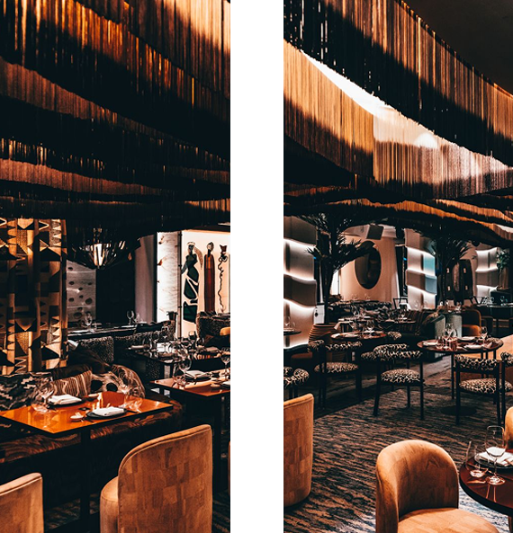

<!-- PAGE RESTAURANT (layout maquette) -->
<div class="text-dark py-5">
  <div class="container">
    <div class="d-flex justify-content-between mb-5">
      <h5 style="font-weight: 300; letter-spacing: 1px;" class="text-black mt-5 urbanistt">Le restaurant</h5>
      <app-fild-ariane [horizontal]="true"></app-fild-ariane>
    </div>

    <!-- TOP: image + texte (comme photo 2) -->
    <div class="row align-items-center col-10 mx-auto mb-5 pb-5">
      <div class="col-5">
        
      </div>

      <div class="col-7">
        <h1 class="display-6 urbanist">
          Une institution de la<br />
          gastronomie japonaise
        </h1>

        <p class="mt-3">
          Kiyomi, qui signifie « Pure Beauté » (清美) en japonais, incarne une vision raffinée du sushi de luxe.
        </p>
        <p>
          Né de la passion et de l’exigence, le restaurant célèbre la pureté du produit, la précision du geste et l’harmonie des saveurs.
        </p>
        <p class="mb-0">
          Entre tradition japonaise et modernité élégante, chaque détail, des créations culinaires à l’identité visuelle, reflète une quête d’excellence absolue.
        </p>
      </div>
    </div>

    <app-suggestion class="my-5"></app-suggestion>

    <!-- STATS + CHARTS -->
    <div class="my-5 py-5 col-10 mx-auto">
      <h5 class="mb-4 urbanistt">Les statistiques</h5>

      <!-- 3 KPI -->
      <div class="row text-center g-4 mb-4">
        <div class="col-md-4">
          <div class="display-5 urbanistb">{{ stats.percentages.takeaway }}%</div>
          <div class="urbanistb">Etudiants</div>
        </div>
        <div class="col-md-4">
          <div class="display-5 urbanistb">{{ stats.percentages.delivery }}%</div>
          <div class="urbanistb">Professionnels</div>
        </div>
        <div class="col-md-4">
          <div class="display-5 urbanistb">{{ stats.percentages.onSite }}%</div>
          <div class="urbanistb">Retraité</div>
        </div>
      </div>

      <!-- 2 charts -->
      <div class="row g-4">
        <div class="col-md-7">
          <div class="chart-card p-3">
            <div class="mb-2 urbanist">Chiffre d'affaire 2025</div>

            <div class="chart-wrap" style="height:280px">
              <canvas id="weeklyChart"></canvas>
            </div>
          </div>
        </div>

        <div class="col-md-5">
          <div class="chart-card p-3">
            <div class="urbanist mb-2">Commandes par villes</div>

            <!-- ✅ ici : cityChart -->
            <div class="chart-wrap" style="height:280px">
              <canvas id="cityChart"></canvas>
            </div>

          </div>
        </div>
      </div>
    </div>

  </div>
</div>
